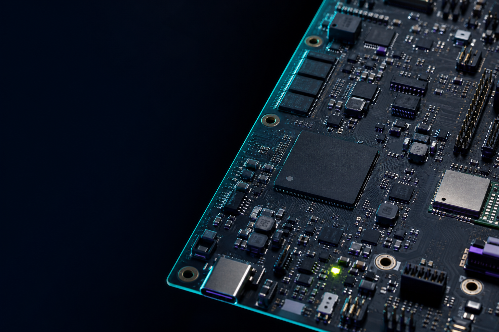
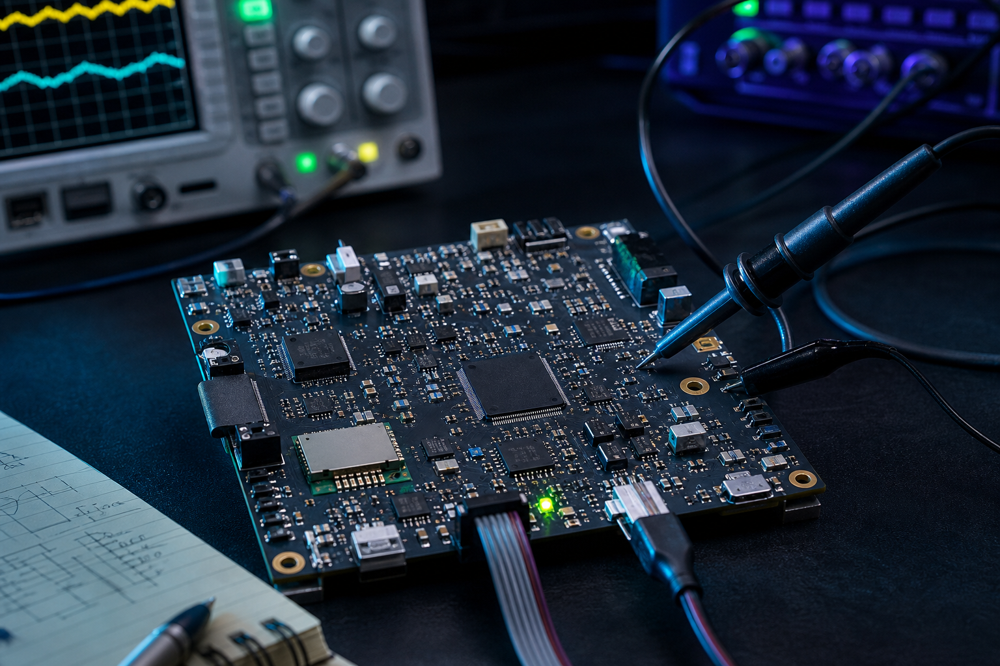
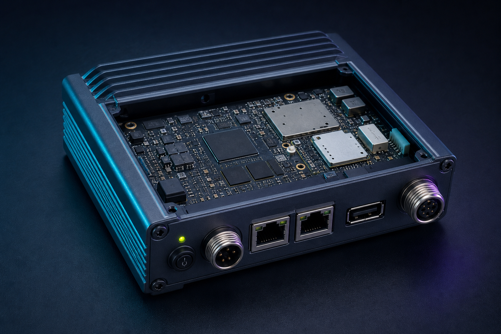

Use
- Believable PCB architecture and real component types
- Actual engineering cues: probes, connectors, enclosures and test gear
- Carbon grounds with restrained cyan and violet light
- One lime live-state accent
- Negative space planned for headlines
04 / Image direction
Michael’s preference for PCB imagery becomes an original Active-ESL visual language: credible embedded electronics, controlled brand lighting and evidence of products being built and tested.

Dark negative space accommodates the headline while the board provides technical detail and visual energy.

Testing equipment and probes make the work feel practical rather than decorative.

A manufacturable enclosure connects embedded engineering to a finished product story.
These are AI-generated concept images, not photographs of Active-ESL hardware. Use them for visual direction and early marketing concepts. Replace or supplement them with genuine product photography as projects become available.